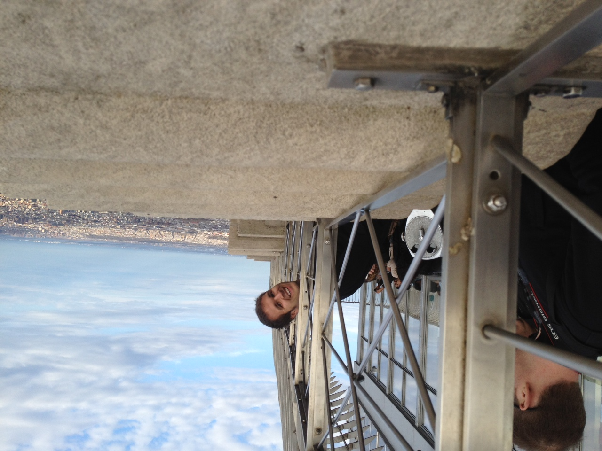
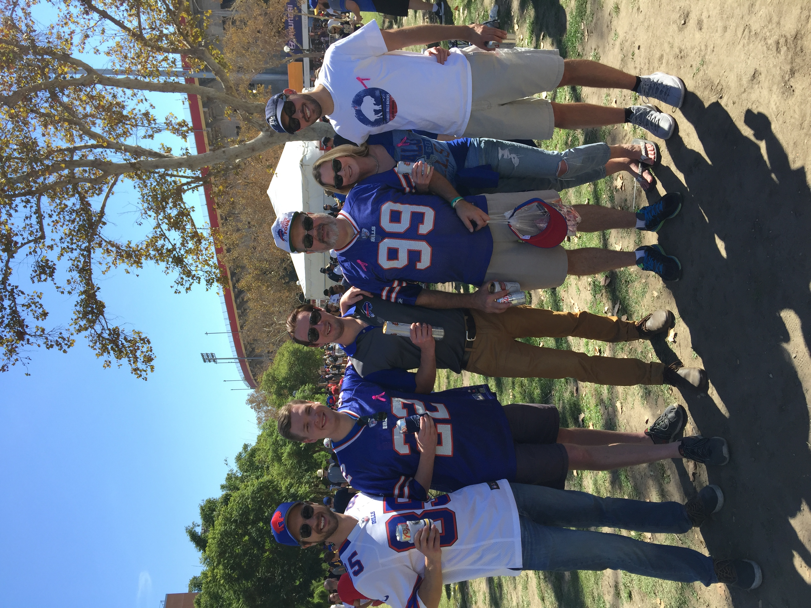
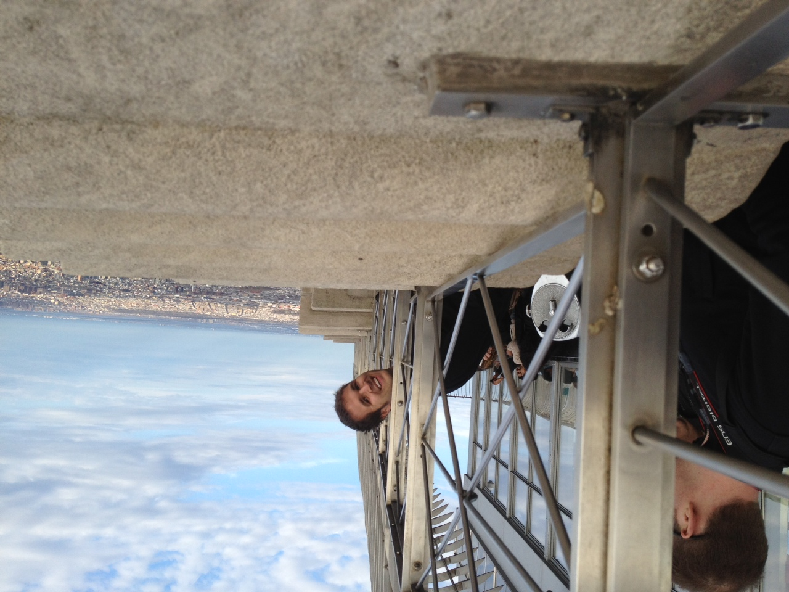
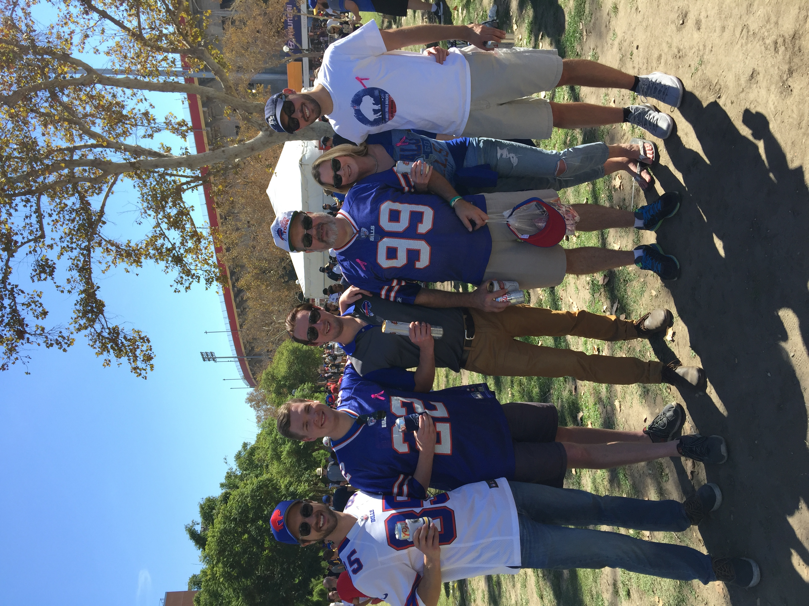
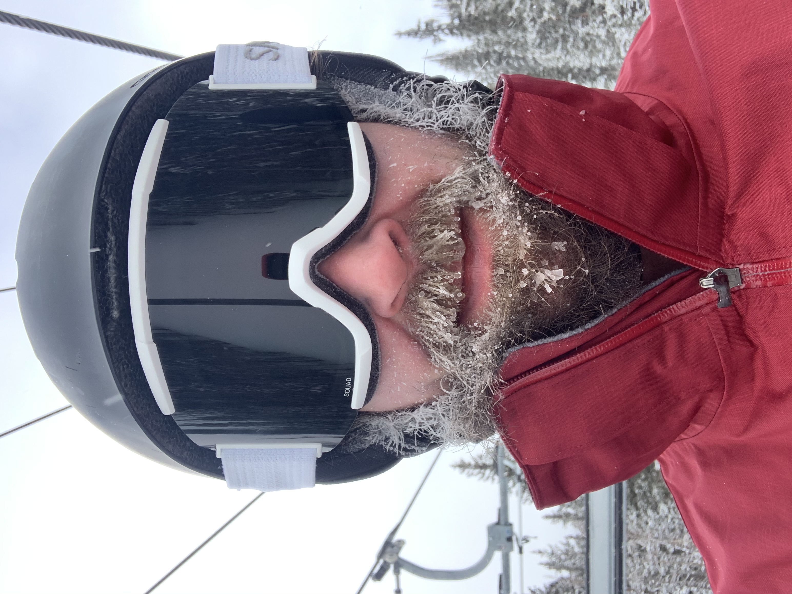
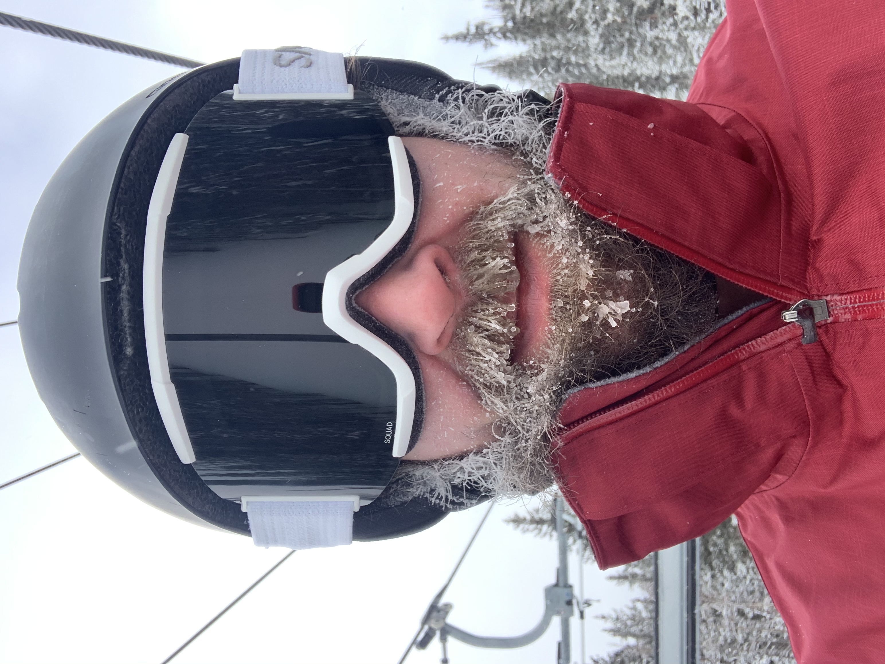
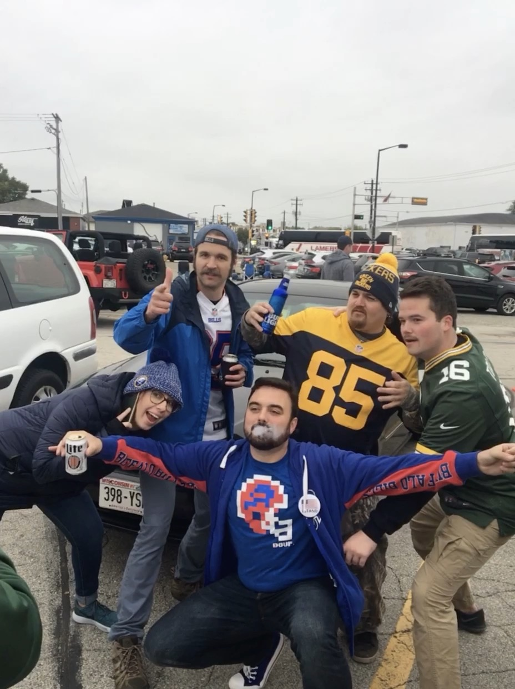
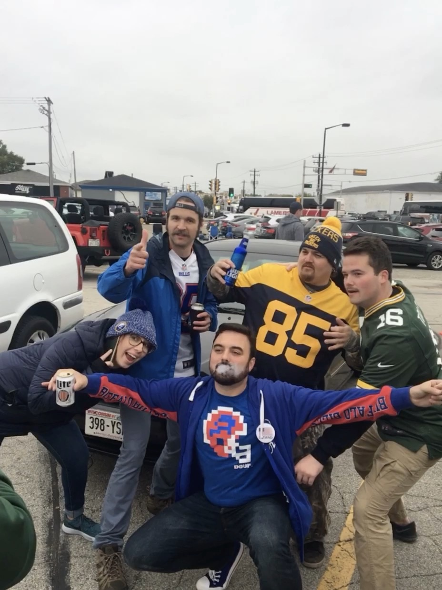

North America
I've Been Here A Lot
North American states I have been to
- California
- Nevada
- Wyoming
- Montana
- Utah
- Arizona
- Colorado
- New Mexico
- Texas
- Oklahoma
- Kansas
- Nebraska
- Wisconsin
- Illinois
- Indiana
- Kentucky
- Ohio
- Michigan
- Missouri
- Arkansas
- Louisiana
- Alabama
- Mississippi
- Florida
- Georgia
- South Carolina
- North Carolina
- Tennessee
- Maryland
- Virginia
- Pennsylvania
- New York
- New Jersey
- Massachusetts
- Rhode Island
- Ontario, Canada
- Baja California, Mexico
- Baja California Sur, Mexico
- Quintana Roo, Mexico
I grew up in Tulsa, OK, the oldest of four brothers. My mother's side of the family is from Tulsa and my father's side of the family is from Buffalo, NY. As such, we took numerous road trips to Buffalo while growing up. Some of my fondest childhood memories were from Buffalo, playing with our cousins in the snow and hanging out with our numerous aunts aunts and uncles and our grandparents.
I have continued making treks to Buffalo in my adulthood, however my preferred method of transportation is airplane. I have gone to a number of Bills games and been to many weddings in the Nickel City, and each time I go I have a blast. I have recently been putting an emphasis on making time for family and cherising the time I spend with them, so these Buffalo trips are very important to me.
Another major destination that we would road trip to nearly every year was to ski in New Mexico. Our most frequent destination was Angel Fire, however we also skied Red River, Taos, and Riudoso. These trips gave me a love for skiing that I still hold today. The past few years I have had some of the best ski trips of my life, with friends I love and who are also really good skiers.
My brothers and I are alike in very many ways, however one area where I differ is that I love New York City, while my brothers would be content to never set foot back there again. I love the hustle and bustle of the big city, there's always so much to do and see. My first trip was in 2008, when I went with my aunt and uncle, who were going to NY for the American Bar Association meetings that year. That trip we went to the top of the Empire State Building, ate at Tavern on the Green, dined and danced at the Rainbow Room, had drinks at the Plaza Hotel, toured around Central Park, and saw a Broadway Play.
On Subsequent trips to NY I have been to a Nets game, got a private tour of the Met from my cousin, walked the High Line park, hit golf balls at a driving range overlooking the Hudson, and gone to a number of comedy shows. I always have fun when going to NY, and have a trip planned in a few weeks to see an exhibit at the Met that my cousin worked on and see a the Buffalo Sabres play the New York Islanders.
 




 

 
